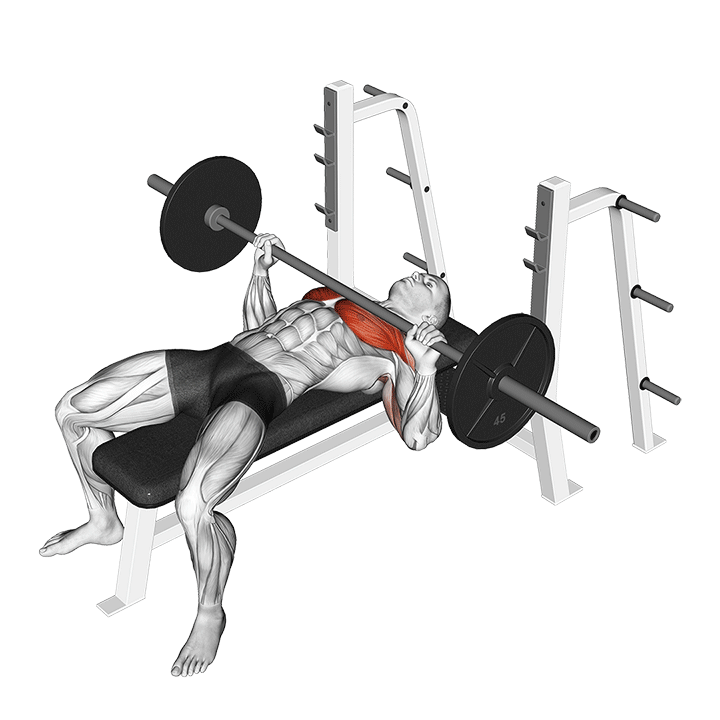

1. Press banca
Press principal del día. Muy bueno para ganar fuerza y masa en pecho, con bastante apoyo de tríceps y hombro anterior.
Técnica clave: pies firmes, escápulas retraídas, barra bajando con control hacia la parte media-baja del pecho.
Tip: mantén tensión en la espalda alta y no pierdas estabilidad al empujar.
Error común: abrir demasiado los codos o perder la posición de hombros al bajar.
Registro
Sin registro guardado todavía.